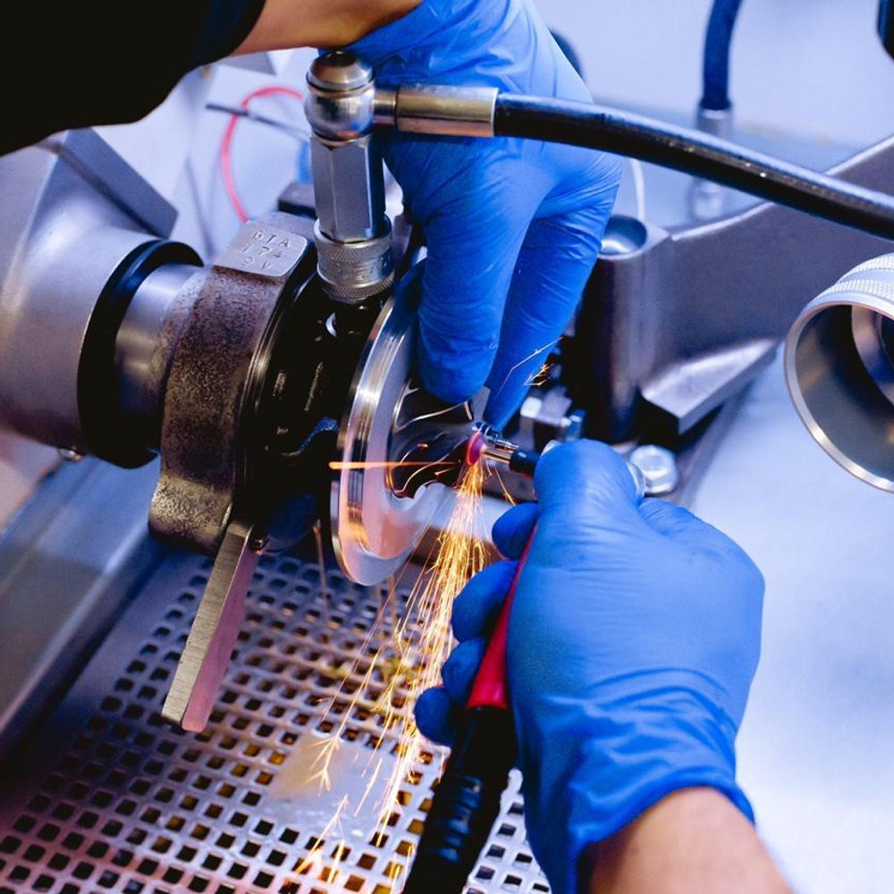
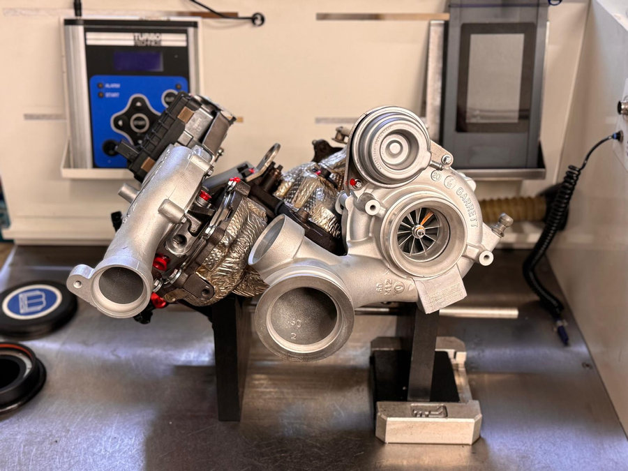
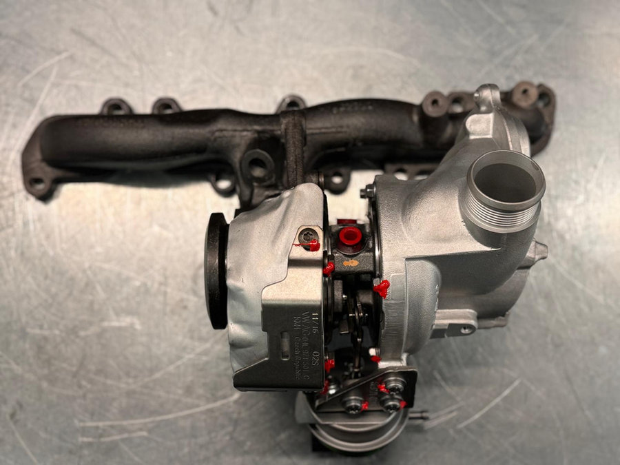
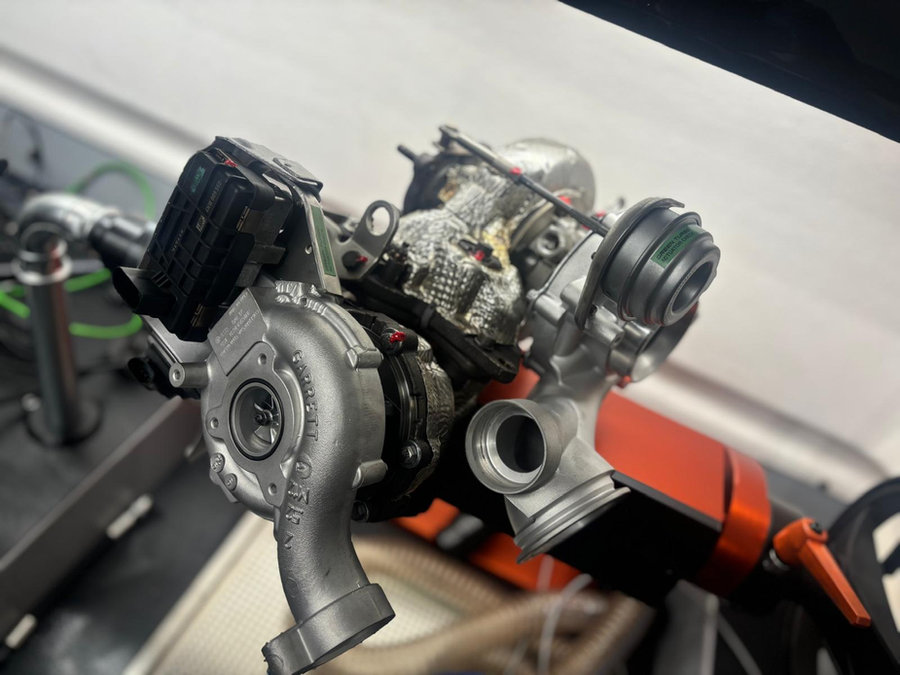
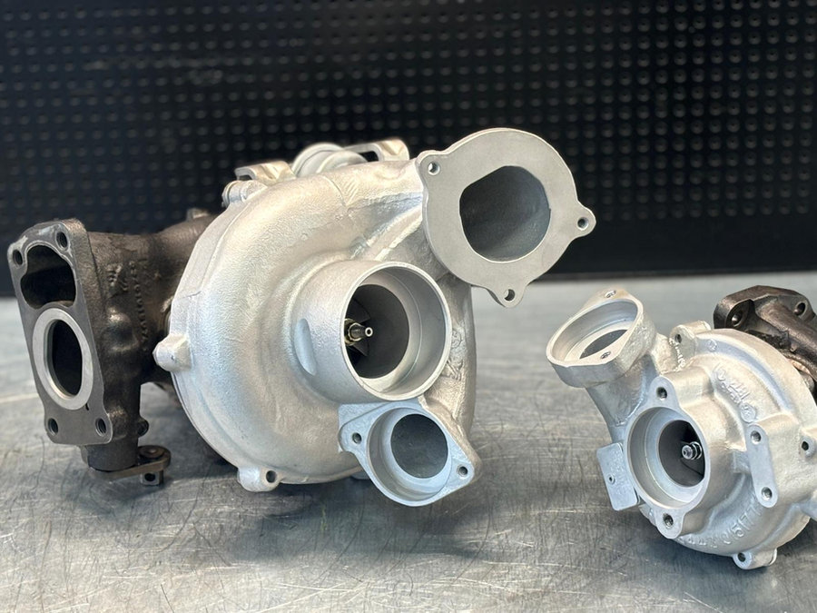

Instandsetzung
Fachgerechtes Remanufacturing: Abgenutzte Teile werden ersetzt, die Rumpfgruppe neu gewuchtet, die Leistung wiederhergestellt. Gleiche Qualität wie neu, zum besseren Preis.
Turbolader-Instandsetzung · Uster ZH · Swiss Made
Wir revidieren Ihren Turbolader direkt in Uster: in Erstausrüsterqualität, mit gleicher Gewährleistung wie ein Neuteil und in dringenden Fällen innert 24 Stunden.
Leistungen
Fachgerechtes Remanufacturing: Abgenutzte Teile werden ersetzt, die Rumpfgruppe neu gewuchtet, die Leistung wiederhergestellt. Gleiche Qualität wie neu, zum besseren Preis.
Wir ermitteln die genaue Schadensursache. So wissen Sie, was am Fahrzeug zusätzlich gereinigt, gewechselt oder erneuert werden muss, damit der Schaden nicht wieder auftritt.
Ist eine Reparatur nicht möglich, liefern wir neue Original-Turbolader oder geprüfte Aftermarket-Modelle mit aktueller Technologie.
Von der Offerte bis zum Einbau: Einbauhilfen, technische Fragen, Auswahl des passenden Turboladers. Montag bis Samstag für Sie erreichbar.

Remanufacturing
Beim Remanufacturing wird Ihr gebrauchter Turbolader fachgerecht überholt und in den Originalzustand versetzt. Das ist günstiger und ressourcenschonender als ein Neukauf, verlängert die Lebensdauer des Bauteils und liefert dieselbe Leistung.
Ablauf
Senden Sie uns eine Kopie des Fahrzeugausweises per E-Mail oder WhatsApp. Sie erhalten eine unverbindliche Offerte.
Bringen Sie den Turbolader in Uster vorbei oder schicken Sie ihn per Post. Ausbauhilfe geben wir gerne telefonisch.
Wir zerlegen, prüfen und setzen instand. In dringenden Fällen innert 24 Stunden, sofern alle Ersatzteile an Lager sind.
Sie erhalten den revidierten Turbolader mit Garantie, Schadensbericht und Einbauhinweisen zurück.
Warum Green Turbo
Neueste Maschinen und Prüfstände, laufend geschultes Team. So bleibt die Qualität auf Erstausrüsterniveau.
Wir verbauen ausschliesslich hochwertige Komponenten, damit jeder revidierte Turbolader wieder neuwertig ist.
Passgenaue Lösungen für Garagisten, Grosshändler und Privatkunden, ob grosses oder kleines Budget.
20 Jahre Erfahrung in der Turbolader-Instandsetzung. Wir begleiten Sie von der Diagnose bis zur erfolgreichen Reparatur.
Einblick




Sehr unkomplizierter und freundlicher Service. Komme gerne wieder zu euch.
Top Service bei Green Turbo! Die Reparatur meines Turbos ging extrem schnell und die Qualität der Arbeit ist wirklich beeindruckend. Beim Abholen wurde mir alles genau erklärt und man merkt sofort, dass hier Profis arbeiten. Der Vibrationstest meines Turbos lag bei 0,1, was ein super Ergebnis ist. Preislich bin ich ebenfalls sehr zufrieden. Vor ein paar Jahren musste ich bei einer anderen Firma Monate warten – hier ging alles schnell und unkompliziert. Klare Empfehlung!
Heute per WhatsApp Kontakt aufgenommen und umgehend eine super schnelle und kompetente Antwort erhalten. Dank Ersatzteilen an Lager war die Abwicklung sehr schnell: Den Turbo kann ich morgen bringen und bereits übermorgen wieder abholen. Wirklich sehr empfehlenswert!
Perfekter, schneller und problemloser Service. Erstklassige Qualität. Schweizer Qualität. Der beste Turbo-Service des Landes.
Hervorragende Arbeit! Ich habe meinen alten Turbolader von meinem BMW X5 zur Überholung in diese Werkstatt gebracht, und das Ergebnis ist einfach fantastisch! Der Turbolader sieht aus wie neu, und die Qualität der Arbeit ist wirklich beeindruckend. Alles wurde professionell gereinigt, überholt und perfekt montiert. Der Service war zudem äusserst freundlich und kompetent. Vielen Dank an das gesamte Team – absolute Empfehlung für alle, die auf Qualität und Präzision setzen!
Persönliche Beratung
Schicken Sie uns eine Kopie des Fahrzeugausweises oder die Nummer Ihres Turboladers. Sie erhalten eine unverbindliche Offerte, telefonisch, per E-Mail oder WhatsApp.
Montag bis Samstag erreichbar. Sie sprechen direkt mit dem Fachmann, nicht mit einem Callcenter.
Kontakt
Öffnungszeiten
Montag bis Freitag 08.00–18.00 Uhr
Samstag 09.00–12.00 Uhr